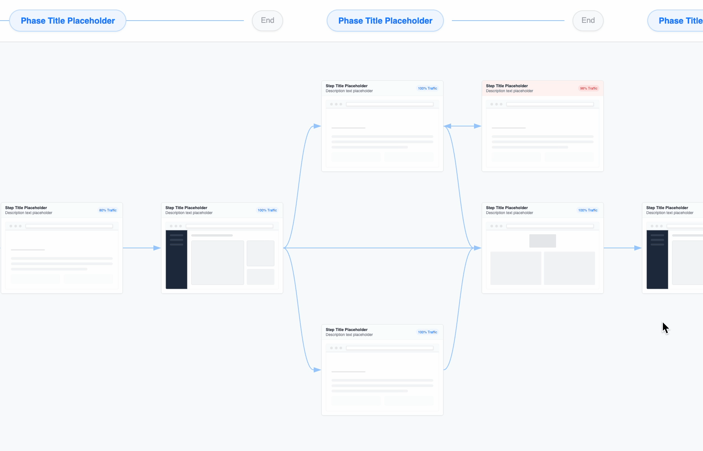
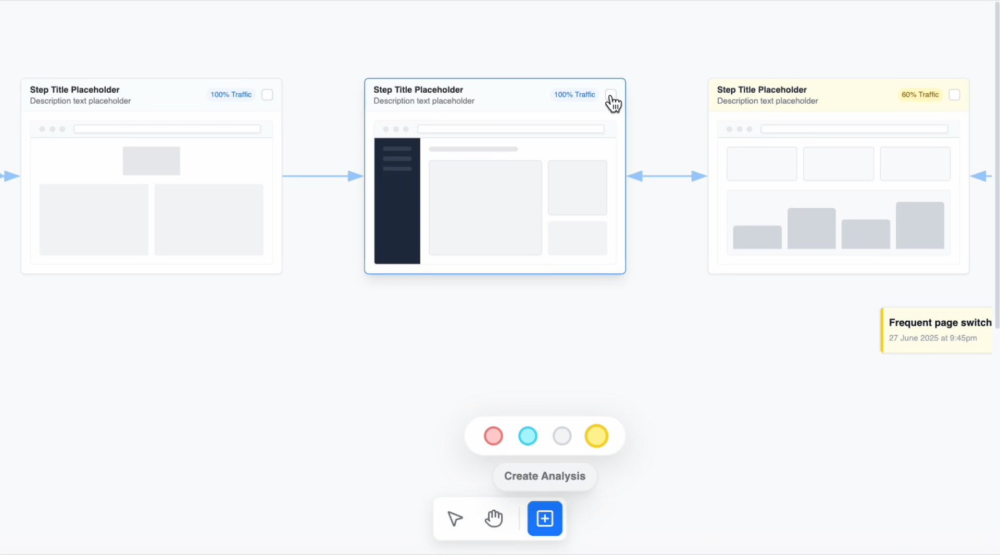
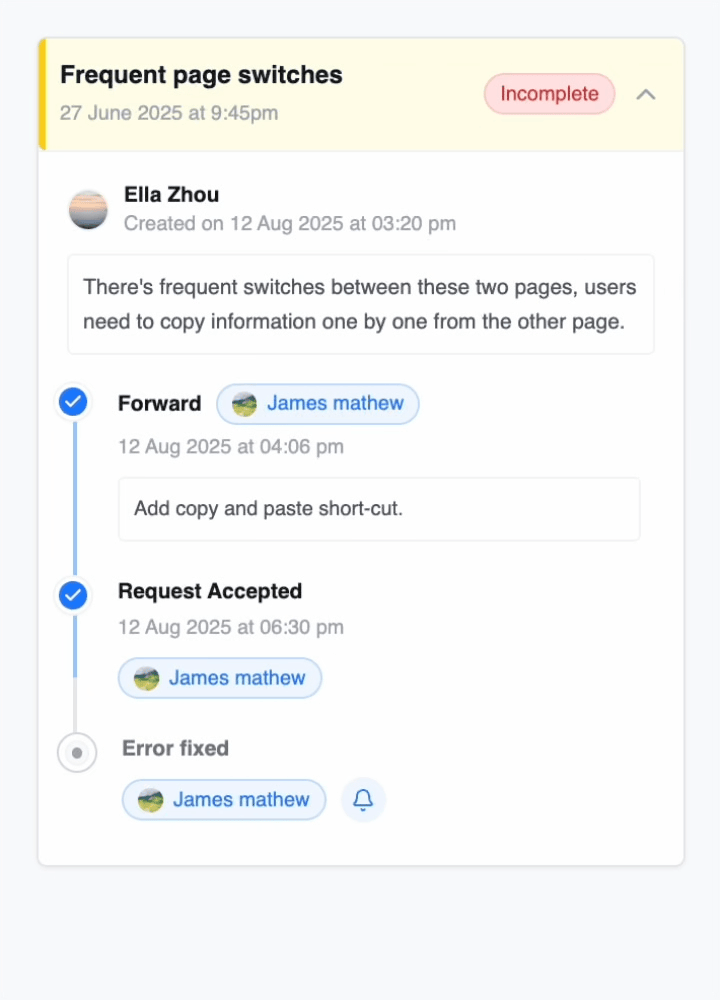
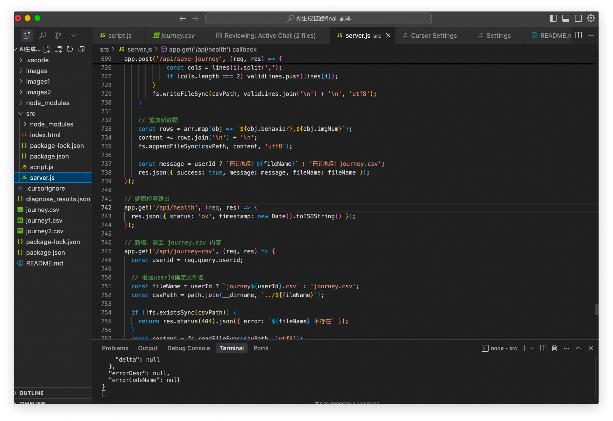
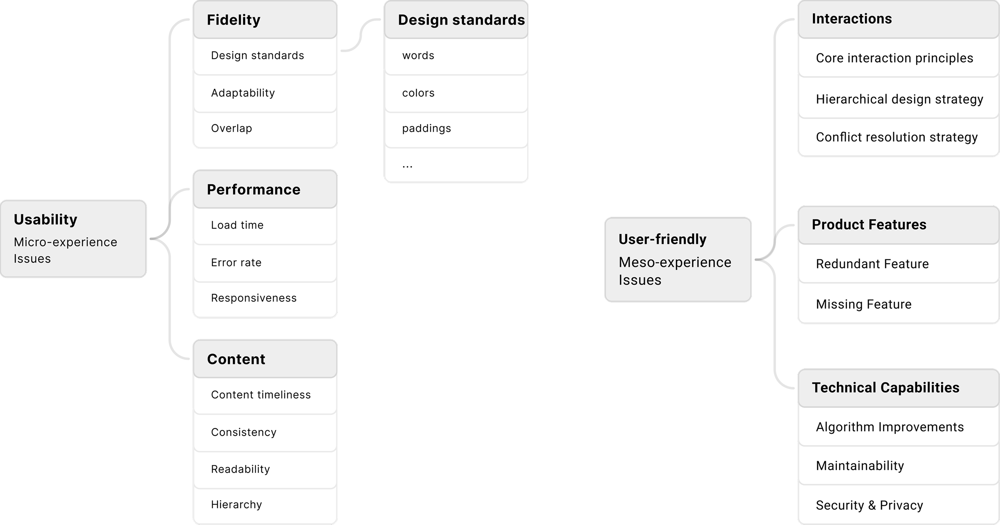

Context & Importance
Taobao Flash Sale supports Alibaba’s key local services ecosystem. It provides instant food delivery and last-mile logistics within cities, serving millions of users every day.
Our team creates design tools and platforms to enhance designers' working efficiency.
On average, Alibaba’s designers spend 2 - 4 weeks creating journey maps to reconstruct behavior paths and identify issues. Despite the significant time and resources required, user flow remains one of the most critical steps before decision-making and design output.
The Problem
At Alibaba, the effectiveness of user flows is hindered by inefficient on-site user behavior documentation and inconsistent and time-consuming practices, making it difficult for designers to generate quick insights to guide design decisions.
Time-consuming
Organizing and analyzing on-site user behavior images is overly tedious due to manual data collection and organization.
Inconsistent Patterns
Designers follow inconsistent mapping patterns which fragments the organizational knowledge base over time.
Communication Gap
Engineers could hardly understand the user flows created visually in design tools without strict underlying logic.
The Solution
Create an end-to-end AI-driven user flow generation tool that:
- Automates the user behavior documentation process.
- Automates user flow generation with consistency and high-quality output.
Automate Data Collection

Initial Proposal
Create a company-specific desktop plugin that integrates an internal auto-screenshot tool to automatically capture user behaviors, alongside a system that records raw user data at the system, browser, and page levels.
Current Method
Leverage open-source screenshot tools and the internal Analytics & Event Management (AEM) system to capture user data—including images and behavior data—at both browser and page levels.
Future Blueprint
Replace the open-source screenshot tool with an internally developed one, improving AEM system to allow the capturing of raw data at both system and real-life levels. This ensures better data safety and enables targeted features.
Automate User Flow Generation
01. Rapid AI Automation Prototyping
How can I, as a designer, lead the rapid design of a brand-new AI tool, improving design speed, quality, and overall impact of the design?
Used Alibaba’s internal AI workflow tools to prototype the AI-driven user flow. By bridging design thinking into AI improvement, we guided the model to generate accurate and actionable insights.
Interviewed 10+ senior designers to understand their journey integration logic.
Condensed the insights into clear, learnable steps the AI model can follow.
Collaborated with technical consultants to translate design-thinking patterns into computational logic.
Refined AI prompts through iterative collaboration with senior designers and technical partners.
02. User Interface Prototyping
Frontier AI tools help ensure the quality of AI-generated user flows. To support designers, both the AI generation process and its outcomes had to be visualized in a clear and actionable way.
Feedback loops for AI generation

AI User Flow visualization

"Designers frequently reference behavioral phases during user flow analysis, so I designed them to aligned with the corresponding behavior screenshots."
Problem analysis
Case Generation

Analyze & Coordinate

Program Navigation
More Contributions
Vibe Coding

Integrated AI workflows and ML models through Cursor, allowed user input via the UI, and visualized the output on the front-end for a complete end-to-end prototype.

AI-driven Problem Analysis
Define problem analysis standards to use AI to connect insights across the user flows and helped designers identify problems and opportunities more efficiently in a unified dashboard.
